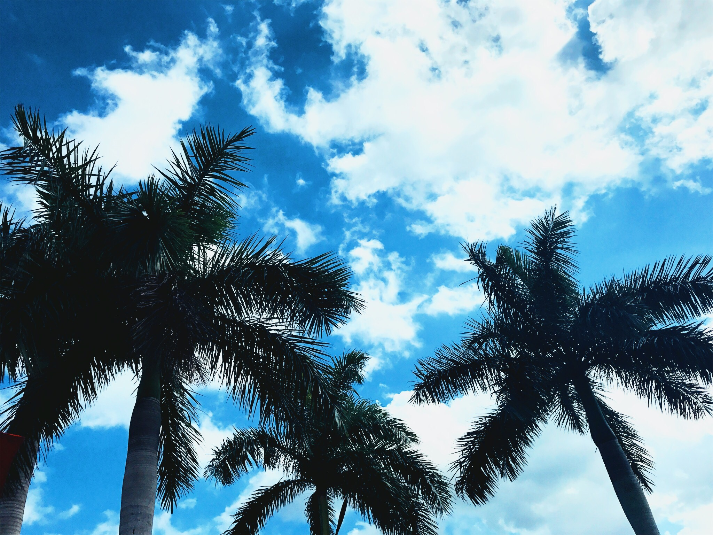
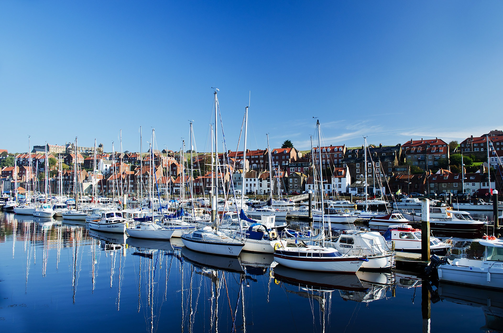

Yoooo people in the club!
| I picked this as my first picture to add to the website because I thought it had a cool design and nice coloring. It is a JPEG, 325px wide and 350px tall, 1.6 MB https://www.pinterest.com/explore/peace-signs/ | |
|  | This picture was one that I took down in Florida. My grandmother has a hosue down there so we visit often and I just thought that it would be a really artsy picture to add to the website. It is a JPEG, 325px wide and 350px tall, 951 KB |
| This was the picture that I created in photoshop. I used different colors, a gradient, and text. I chose these colors thinking it would go well with the color of my website's background and I just wanted to write something positive about web publishing :) It is a PNG, 325px wide and 350px tall, 76 KB | |
| This was the modified picture I took from the internet. Originally it had looked like a clear picture of a sunset on a hill with trees and grass. After I modified it, it was a blurred and smudged edit of the original picture I had. It is a JPEG, 325px wide and 350px tall, 63 KB https://www.timeanddate.com/sun/ | |
| This picture was another one I created in photoshop. It is a 3D text of my name and I hoped it would go well with my web page! It is a PNG, 325px wide and 350px tall, 17 KB | |
|  | I chose this as my last picture because I really like the look and coloring of this photo. It also reminds me of summer which is my favorite season and when my birthday is, and also of Nantucket, where I visit a lot in the summer with my family! It is a JPEG, 325px wide and 350px tall, 771 KB https://www.pexels.com/photo/sea-sky-beach-holiday-73806/ |